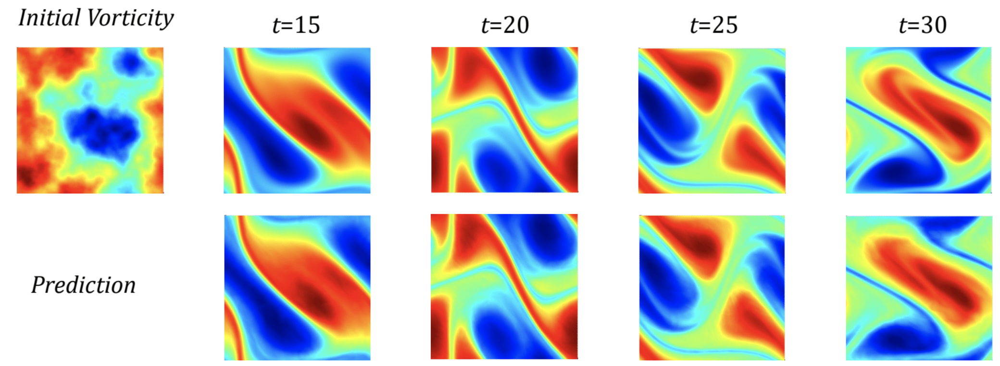

Neural Operator
Zongyi Li, Nikola Kovachki, Kamyar Azizzadenesheli, Burigede Liu,
Kaushik Bhattacharya, Andrew Stuart, Anima Anandkumar

Abstract
The classical development of neural networks has primarily focused on learning mappings between finite dimensional Euclidean spaces or finite sets. We propose a generalization of neural networks tailored to learn operators mapping between infinite dimensional function spaces. We formulate the approximation of operators by composition of a class of linear integral operators and nonlinear activation functions, so that the composed operator can approximate complex nonlinear operators. We prove a universal approximation theorem for our construction. The proposed neural operators are resolution-invariant: they share the same network parameters between different discretization of the underlying function spaces and can be used for zero-shot super-resolutions. Numerically, the proposed models show superior performance compared to existing machine learning based methodologies on Burgers' equation, Darcy flow, and the Navier-Stokes equation, while being several order of magnitude faster compared to conventional PDE solvers.
Papers: [FNO], [GNO], [MGNO], [MNO]
Code: [FNO], [GNO+MGNO]
Blog posts: [FNO], [GNO]
Media coverage: [MIT Tech Review],
[Quanta Magezine],
[Towards Data Science],
[Medium]
Talks/Videos: [U Washington]
[U Toronto]
[CMU]
Model
Results of Navier-Stokes Equation
We consider the 2-d Navier-Stokes equation for a viscous, incompressible fluid in vorticity form on the unit torus.
1. Supervise Learning
In this experiment, we use neural operators to learn the operator mapping from the vorticity of the first time 10 time steps to that up to a later time step.

FNO achieves better accuracy compared to CNN-based methods.
Further, it is capable of the zero-shot super-resolution.
It is trained on 64x64x20 resolution and evaluated on 256x256x80 resolution, in both space and time.
2. Bayesian Inverse Probelm
We use a function space Markov chain Monte Carlo (MCMC) method to draw samples from the posterior distribution of the initial vorticity in Navier-Stokes given sparse, noisy observations at a later time step.

We generate 25,000 samples from the posterior (with a 5,000 sample burn-in period),
requiring 30,000 evaluations of the forward operator. In sharp contrast, FNO takes 0.005s to evaluate a single instance while the traditional solver, after
being optimized to use the largest possible internal time-step which does not lead to blow-up, takes
2.2s.
3. Physics-Informed Setting
When the equation is available, we can use the physics-informed loss to solve the equation.

We propose the pre-train and test-time optimize scheme. During pre-train, we learn an operator from data.
During the test-time optimization, we solve the equation using PINN loss.
4. Kolmogorov Flows
The Kolmogorov Flow is a chaotic system, which is intrinsically instable. Smaller errors will accumulate and make the simulation diverge from the truth.

We take a new perspective:
we predict long-time trajectories that, while eventually diverging from the truth,
still preserve the same orbit (attractor) of the system and its statistical properties.